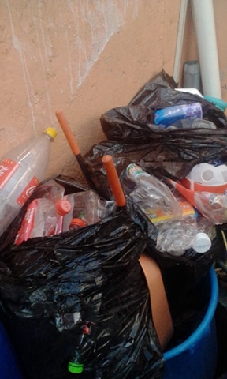

Contaminacion ambiental en mi comunidad y acciones para combatirla
Contaminación
Esta es la contaminacion en mi comunidad

Reciclaje
El reciclaje que algunas personas hacen

Esta es la contaminacion en mi comunidad
El reciclaje que algunas personas hacen


 4
4